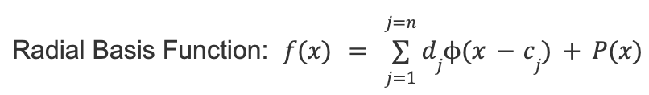

Our project utilizes libraries and packages from WebGL to create an interface. With the model, we used a glTF rigged model of Sonic from online to make the keyframes in Blender to create our animation. To implement it, we used interpolation through linear averaging between positions in relation to time to get the values in between the keyframes. There are options with the accessors to attempt cubic interpolation; however, with our keyframes, linear interpolation was the simplest approach and still provided a smooth animation. We decided to make our Sonic character do a high kick dance which was fun to see it get rendered through the React app. As an extension, we wanted to implement camera capture with a video frame that can sense a person and take captures of the person’s poses and then integrate it and have Sonic do the same movements. We were able to capture poses and the future steps would include translating the 2D pose from the capture to the 3D models of Sonic which may have to utilize depth interpolation to make the translation.
|

|
This equation interpolates positions where f(X) represents the interpolation function with all the values in between. dj represents the weights of how much the specific value of interpolation should affect the final project. cj is the specific position of the keyframe and P(X) is a one-degree polynomial function that gets added to the general position so that the general position of the model is correct in relation.
The importance of orthonormalization is to make sure that the vectors are scaled, corrected and pointed in the correct direction as the movement and not the opposite direction which can happen through the math done in the radial basis function. Although we seemed to be able to implement both of these algorithms with the given equation and the cross products for orthonormalization, we were unable to fully test it without testing our renderings.
Spatial Keyframing by taking the interpolation from the Radial Basis Function and orthonormalization to be a realistic transformation to present the values. It tok in values from the input as the keyframes and keysets and used our given functions to interpolate them and save the values to be given as an output that could be displayed on the screen.
Problems: We tried for days to implement an interface either using Ogre which is an open source 3D graphics engine or OpenGL, both with libraries that should be able to provide us the resources to build an interface, but the code and tutorials that we found were mostly Linux based and we were unable to translate the code to be compatible with Mac. We learned that the larger scaled renderings were harder to be able to run with Mac due to the large scale data needed for animations in comparison to image renderings from earlier in the class. In addition, although we understood the algorithms needed to implement the spatial keyframing, the interface was found to be the most difficult part which caused us to abort this attempt at the project since without the interface, we would be unable to provide a demo or physical animation.
We implemented the structure of a resource document linked below to build our project.
Model: We used a rigged model of the character Sonic to create keyframes in Blender. We exported this as a glTF file in order to integrate the Sonic keyframes with our code.
Interpolation: Interpolation was calculated between keyframes as a linear average based on time and position. This was taken by subtracting the final position by the initial position divided by the amount of time passed so that the animation between the two positions is smooth and averaged as time passes. The GLM library was helpful for making these calculations.
Files: We need to feed in the keyframes from the Blender in the glTF file that we have as Sonic. We used accessors that capture the difference between the model poses. These accessors point to a buffer and act as the input to the samplers. The buffers are the data set that hold the data for the positions and vertices throughout the animation. There is also a bufferview that just takes in snapshots of the buffer data. The samplers take in the interpolation overtime and output vectors defining the position of the model. These outputs are also captured through accessors. The output accessors go to channels which map the change of the sampler to the nodes and apply rotations and translations. The nodes are the parts of the model that the changes are being applied to. The nodes are stored in an array of nodes which is stored in the buffer. Then the bufferview provides a snapshot of the model. There are various nodes that make up the animation as there are different bones in the model that need to move to be able to make the animation move so the combination of all the nodes make the character move.
Future: We planned to expand this animation to include inputs from our motion tracker. The motion tracker works by taking video footage as an input in real time. Using the MediaPipe library, it detects landmarks such as a user’s body including arms and hands. In the interface, you can choose when to snapshot each position and it will save the pose. In theory, we wanted to make the animation and interpolate the poses to make an animation. We wanted to feed the landmarks into our animation as inputs so that the Sonic character would mimic a user’s motions. However, we did not accomplish this end-to-end. When we spoke to a GSI at the final presentation, he told us that translating 2D inputs from a motion tracker like the one we created to a 3D model is a challenge that people are actively researching. We suggested doing depth interpolation; although it wouldn’t be the most accurate, it would be the easiest current solution with our knowledge, but there are definitely more in depth ways to be able to accomplish it with better accuracy. We plan to find a way to approximate this translation to carry out our vision.
Lessons learned: We learned that building a project from start to finish is more difficult than expected. Though we felt we had a strong grasp on course concepts, we were not prepared for how challenging it would be to display results in an interface. We also learned that when you are looking through documentation, it is important to research libraries and other resources you plan on using to see if they will work for your vision before getting started. Overall, we enjoyed creating our project and are satisfied with the knowledge gained.
https://www-ui.is.s.u-tokyo.ac.jp/~takeo/papers/squirrel.pdf
Lots of Ogre and Skeleton Animation tutorials which failed on our Macs
https://github.com/KhronosGroup/glTF-Tutorials/blob/master/gltfTutorial/gltfTutorial_006_SimpleAnimation.md
I worked on debugging the initial functions and trying to get our animation rendered with Ogre. I watched and followed along with a two-hour Ogre tutorial before we decided to go in another direction. I then tried different libraries and methods of rendering but eventually another team member was able to get something to render. From there, I coded and debugged with the group until we reached our final presentation.
I worked on the initial project idea with implementing Spatial Keyframing and understanding how it works with the Radial Basis Function that coincides with Orthonormalization to be able to interpolate the values. Our group did well to bounce off ideas and debug these original functions and in general throughout the project so it was definitely a group effort trying to code and debug these functions and methods. I helped code those algorithms with the values that we knew; however I ran into problems when trying to find a way to render the images. I spent hours and hours trying to implement Ogre or OpenGL or any form of library that would help render and display an image or animation on my screen from various tutorials I found and my group found that we attempted, yet none of us found such luck. Going into the final version of our project, I helped debug and understand how the WebGL worked along with the new code and how the data was processed so I could also help with our presentations. I found the models that we were trying to use throughout the project and worked with my group to choose keyframes when we were able to get a working rendering.